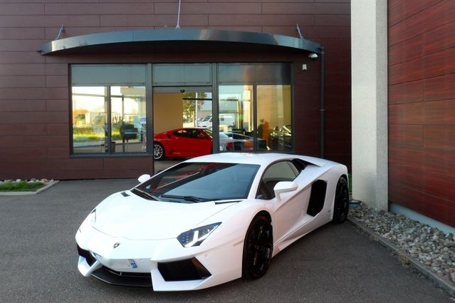
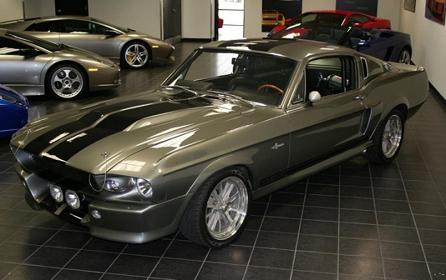

La société Auto KILIC 66 est un des leaders à Lyon du négoce en automobile de Prestige et de Luxe et est en activité depuis 15 ans.
Dans notre showroom vous y trouverez un large choix de voitures de prestige Bmw, Lamborghini, Porsche, Audi, Land Rover, Mini, Rolls Royce... mais avec une prédilection pour les marques Ferrari. Les voitures modernes sont prises en charge par Kerim KILIC, Gérant de la boite et de Sedat ALTUN depuis 10 ans.
Sedat ALTUN gère lui a travers son relationnel les véhicules d'exception et de Collections ainsi que ceux de compétition Historiques. Ce dernier étant impliqué dans la course automobile depuis de nombreuses années il saura vous conseiller dans vos choix et vous orienter au mieux.
Nous sommes à même de vous proposer en permanence un large choix de voitures à la vente, à l’achat ou bien sur commande.
Nous vous accueillerons avec plaisir pour satisfaire vos demandes particulières dans cette large gamme de choix afin de réaliser votre achat dans les meilleures conditions possibles. Pour nous contacter, il suffit d'aller dans l'onglet Contacter nous et remplir et le formulaire.
 